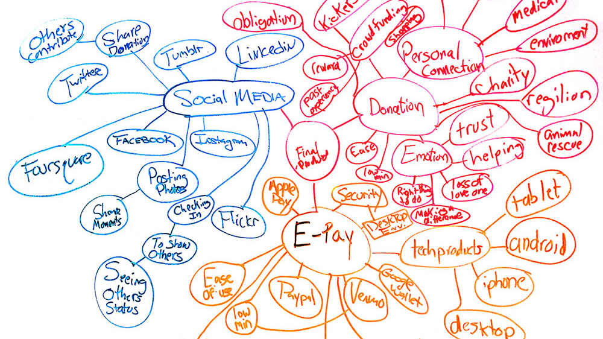

The best designers are always the ones that have a diversity of experience, so I’ve been fortunate. I was a successful stainglass artist. Then in 2000, then found a new career working for a magazine that sold half a million copies a month (Muscle & Fitness), then worked on interactive magazine editions for Robert Kennedy Media, and spearheaded the company’s first apps. And now my UX skills help solve the digital roadblocks that can keep a website or app from excelling. My 10 years of visual design skills is like the icing on the digital cake. I like to say that I have the ability to make things usable and beautiful. Let me show you how.
RESEARCH. IDEATE. TEST. REPEAT.
No, it’s not shampoo instructions. But the analogy is a good one. It may seem that simple to someone just looking at the shampoo bottle, but in the same way you can’t really see how much research and testing went into your favorite shampoo, the same is true for a great final product. What color should your shampoo or your app be to evoke the right emotional response? How much shampoo lather or information is too much? In the end, you know your shampoo works and that’s all that really matters. The same is for a great website. It looks great and works flawlessly. So, let’s put your shampoo bottle back in the shower, and let’s talk about research.ARE YOU TALKING TO ME?
Yes, I am, but I what I really mean is who is your product talking to? I want to find out. After rolling up my sleeves, I don’t start with the user. The first thing to do is a stakeholder interview. Listening for what they believe their product does and finding out what their product really does is, in essence, my job. So it’s important to discover that gap of perception. Keeping the stakeholder’s goals in mind, I can gauge the KPI’s for their product. With that in tow, let’s talk to some users.SURVEY SAYS…
Let’s start by saying that the approach to any product is not a set of checkboxes to cross off. Some may require a detailed survey, while others can just be a simple screener. My ultimate goal is find the right demographics for the product to interview. The ability to ask the perfect question is not as important as listening, just plain listening. For at some moment, the person in front of you will reveal something which seems completely oblivious to him or her, but that figurative CFC lightbulb pops into existence above your head. You just heard a pain point. And when you hear that same pain point again and again from other users, you can’t help to smile. You’re half way there. You have the problem, and now you just need the solution. So let’s get ideating!TIME TO VULCANIZE
Umm, no I don’t make tires on the weekend. It’s what I say to myself when it’s time for me to get logical (without the pointed ear though). I set aside my ego, my assumptions, my emotional attachments to features, and just focus on what the users said. I’m a big fan of sticky notes to organize ideas, card sorting exercise, A/B testing keywords and even simple word associations. As an artist, when I would make sculptures, I would have a large clump of clay in front of me. This stage of UX process for me is kind of like that. I’m ready to start molding something with this research. GO WITH THE FLOW
So how do you make sense of all this data? Well, I’m glad you asked. Say hi to Debra Hardy. Married, working professional as a paralegal, and a mom of two busy boys. You just meet your perfect user. Or at least on of them in this hypothetical persona. In my opinion, personas can be a great way to encapsulate a lot of your research into one simple place. But a persona is not complete without a well-thought out user flow and user stories, usually building a minimum of three of each. To help find the holes in my user flows, I will create several user stories and user jobs. And I love the opportunity to draw a storyboard. It really helps to sell the idea to stakeholders. So with all this new data, let’s do some design studio.BY DESIGN
I hope you love the smell of dry eraser markers because there will be a lot of that in a design studio. Working as a part of a UX team is really evident in a great design studio. Time boxing your session forces out some crazy ideas, but also some great ones. Seeing how other team members approached the same problem is very enlightening. On the furtherfood.com project, we did design studio on every page of the site. As a team, we were exhausted but delighted with our results. We were able to merge all the best elements of each other’s whiteboard drawings and get some great for our client. After some caffeine, it was time to wireframe.DOWN TO THE WIRE
For now, let’s just put away your box of 64 Crayola’s because the only colors we’ll need is Starry Night Black, Shark Gray and Peace Dove White. Wireframing, in a way, can be very rewarding. It gives shape to all your research. Depending on the projects goals and timeline, I might start with paper sketches to test out simple concepts or competing ideas. But for the general user, it’s time to use my wireframing software, which can be any of the following: Adobe Illustrator, Sketch, OmniGraffle, Axure or whatever comes out next week. They all have some basic similarities, so I feel comfortable in most vector based programs. Then the question is what’s the right number of wireframes for testing? Hmm, ideally, enough wireframes to measure as many possible choices a user may make. Again time constraints will ultimately dictate the number. But it’s important to at least have the right number of wireframes for the user jobs at hand. From here it’s now time to validate the concepts.TRIED AND TESTED
What do you mean you can’t find it when it’s obliviously at the top left? That doesn’t look like a button, so why do you keep clicking it? You know the app isn’t suppose to do that, right? Yes, you can’t help to have these thoughts sometimes when you’re user testing. And since I’m here to just observe, I would never say those things. This, of course, is why we recruit real users and not Doug, the UX intern. When possible, I like to video the test as well as take notes. Watching the video can sometimes reveal subtle user reactions that was missed before. Doing rapid testing is a great way to move quickly to a solution. Test a few users, iterate the results, update the wireframes, then test a few new users, update the wireframes again, and so on. You can learn a lot in a short period. Have a great team helps, but it’s also ok if I’m solo on the project. I would just play all those roles over a longer period. So let’s now produce a high-fidelity prototype.YOUR TRUE COLORS
My ten plus years of visual design really come to life here. If there is something that defines me more than anything else, it’s that I love to create something beautiful – from my paintings to my web design to my UI. My vast experience really helps me see the wide scope of any project. But I also don’t forget that a delightful experience starts at the pixel level with the buttons and menus the user interacts with. As creative director for large companies, I’ve created style guides, mood boards, web themes, and color schemes for many products. My degree is from the University of New Orleans in Fine Arts, so color theory and design concepts are second nature to me. For final prototypes, I’m most comfortable in Axure. I have a good knowledge of current HTML and CSS so I can easily make changes to the code if needed.IT’S A WRAP
If you’re looking for the most for your budget, consider that I give you three designers in one. I hope this helped you see how I approach UX and design. Let’s start by just saying hello, either for work or just to connect. Thank you for your time. tunadesigner@yahoo.com | 310-968-0025VENN DIAGRAMS. I love using them to demonstrate all possible logical relations between the data that I or the team collected.

SOFTWARE. I tinker around in a lot of different software especially when new ones come out. So this is a just a list of software I'm proficient at. Included in this is also HTML and CSS. The list: Google Apps, OmniGraffle, Axure Pro, Adobe Fireworks, InDesign, Photoshop, Muse, Illustrator, Dreamweaver, Brackets, and Sketch.

COMPETITIVE ANALYSIS. It's one of the first tools I use. I'll find at the top five products and do a feature analysis, breaking down all the parts of the products.
SITEMAP. The sitemap will make several appearances throughout the process. Not only will I generate a sitemap for the existing product and final prototype, but also for some of it's competitors.

SKETCHING. Definitely the fastest way to just get some ideas out of your head into something visual.

PERSONAS. Tying all the surveys and interviews into something a little more tangible.

USER FLOWS/JOURNEYS. This is my favorite way to find any holes in the concepts.

USABILITY TESTING. Finding the roadblocks isn't hard when you know what to look for.
ITERATION. It's something I find very important so I can communicate my ideas to other team members and developers.
VISUAL UI. Beautiful and delightful experiences begin on a UI level
- User Experience Research
- User Interface Design
- Interaction Design
- Usability Testing
- Sitemaps
- Competitive Analysis
- Information Architecture
- Heuristic Evaluations
- Design Specifications
- Art Direction
- Persona & Usage Scenarios
- Data Visualization
- Responsive Design